Robotic Orthosis
Honeybee Robotics | 2014-2015
In February of 2014, in partnership with NYU Poly and the Hospital for Special Surgery, Honeybee Robotics secured a Phase 1 SBIR Award to develop a “Discrete Personal Assistance Orthotic Walking Aid.” Despite the project’s complex title our challenge was conceptually simple: using the latest robotic technology, build a leg orthosis that could amplify the strength of the user to help them walk. Over the next year, I would serve as Honeybee’s principal researcher conducting clinical, market and user research as we worked to understand & define our challenge. Additionally, I would serve as the lead designer and mechanical engineer as we moved from concept to physical prototype.
- Company: Honeybee Robotics
- My Role:
UX Researcher
System Designer
Mechanical Engineer
Fabricator
- Timeline: February 2014 - January 2015
- Collaborators:
Honeybee Robotics
NYU Poly
Hospital for Special Surgery
Overview
In February of 2014, in partnership with NYU Poly and the Hospital for Special Surgery, Honeybee Robotics secured a Phase 1 SBIR Award to develop a “Discrete Personal Assistance Orthotic Walking Aid.” Despite the project’s complex title our challenge was conceptually simple: using the latest robotic technology, build a leg orthosis that could amplify the strength of the user to help them walk. Over the next year, I would serve as Honeybee’s principal researcher conducting clinical, market and user research as we worked to understand & define our challenge. Additionally, I would serve as the lead designer and mechanical engineer as we moved from concept to physical prototype.
Research
We began work on the SBIR (Award No. IIP-1345832) with an intense research phase. Although significant research had been done by all parties before the SBIR application was submitted, we still had a lot of assumptions to validate if we were to be successful. At the core of this research we sought to understand: who we were helping, how exactly we would be helping them, and what technology we could leverage to help them. While NYU Poly led the technological research (focused primarily on the control system software) I led the user research and competitive analysis that would inform and redefine our project. It is worth noting that until this project, Honeybee had never conducted any user research, this was something that I initiated and led.
User Research
Working independently, I began our user research by testing some of the critical assumptions we had made about who would be using our product. Chief among these assumptions was the idea that our primary user would be a typical American, age 50 years or older without any specific medical indications (beyond general, lower-extremity weakness). I began testing this assumption by talking to potential users and conducting user interviews. I wanted to better understand the people we intended to help; understanding their struggles, goals, behavior and perspective would better guide our efforts in the present and help users in the future.
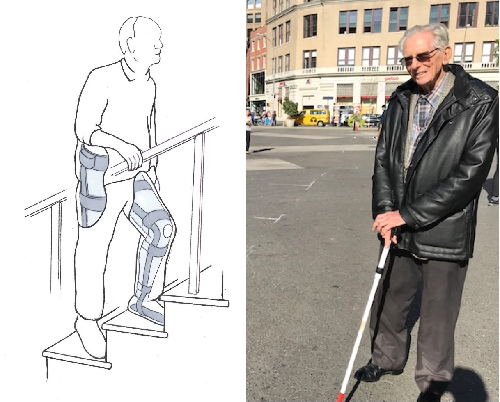Over the next few weeks, I would talk to 87 potential users about their struggles with mobility. Potential users were screened for lower-extremity weakness and subdivided into three categories based on age: those in their fifties, those in their sixties, and those seventy or older. Interviews we’re conducted exclusively outside of the office, often in the homes & nursing homes where the users resided. Conducting interviews inside the user’s living environments yielded many of the benefits associated with contextual inquiries and added a rich layer of contextual data to my research.
After conducting a sufficient number of interviews, I synthesized my research into a 36 page user research report. Although I cannot share the report or its contents, I can highlight the most consequential of my findings: Potential users of all ages were extremely resistant to wearing any type of robotic device no matter the potential benefit. Although stated reasons for this varied, they centered on two primary concerns: a lack of trust in robotic devices (especially those worn to actuate their own body) & the stigma associated with wearing a “brace” even if it was concealed underneath clothing.
This revelation (along with others in my report) forced us to significantly reevaluate our target user and pivot to a more defined clinical use case.
Clinical Research
Having made the decision to focus on a more defined clinical use case, I began working closely with our collaborators at the Hospital for Special Surgery to better understand the pathologies and injuries that result in lower-extremity weakness. After significant independent research guided by HSS, we decided the focus on three clinical populations which exhibit unilateral hemiparesis: those who have suffered a stroke (post-stroke), those who have suffered a traumatic brain injury (or other neurological injury, ISCI, etc), and those who suffer from post-polio syndrome (PPS). Although this new pathological focus greatly reduced the number of potential users, it also greatly increased the potential positive impact we could have on our users lives if we were successful. This was something the whole team felt very good about.
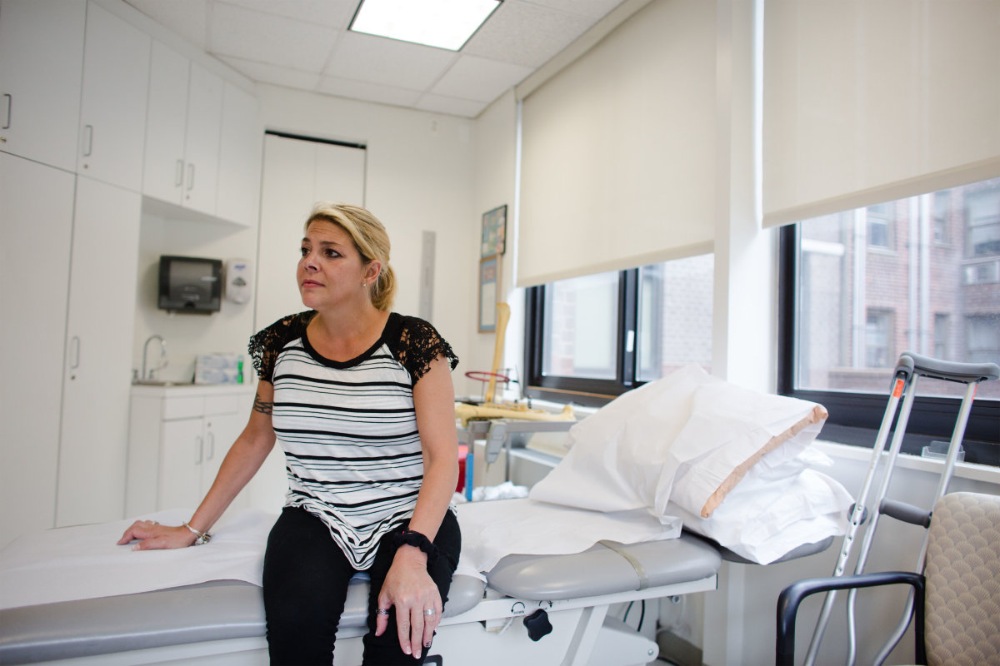With a new primary user for the project, I set out to better understand those users and the unique struggles their pathologies create. Through our partnership with the Hospital for Special Surgery, I was able to conduct interviews with several post-stroke patients and one post-polio syndrome patient. As anyone familiar with stroke will know, post-stroke symptoms can vary dramatically from patient to patient. For the purposes of our research, participants were screened for unilateral or bilateral muscle weakness. Although the interviews conducted were fruitful, this research was augmented with a significant amount of academic research focused on our targeted pathologies. The whole of this research was synthesized into another user research report which would inform our thinking and our design process throughout the project.
Competitive Analysis
In addition to understanding our user, I was also charged with identifying and understanding other current, competitive products/solutions. This understanding would be critical in identifying opportunities in the market place but also critical to understanding what options & features currently exist for our potential users. Although competitive research had been conducted prior to the start of the project, it was far from exhaustive and focused mostly on “exoskeleton systems” that amplify human strength beyond normal levels. My competitive analysis was conducted in tandem with our user research and was summarized in a competitive analysis report. Although I cannot share the report or its content, I can share some key details.
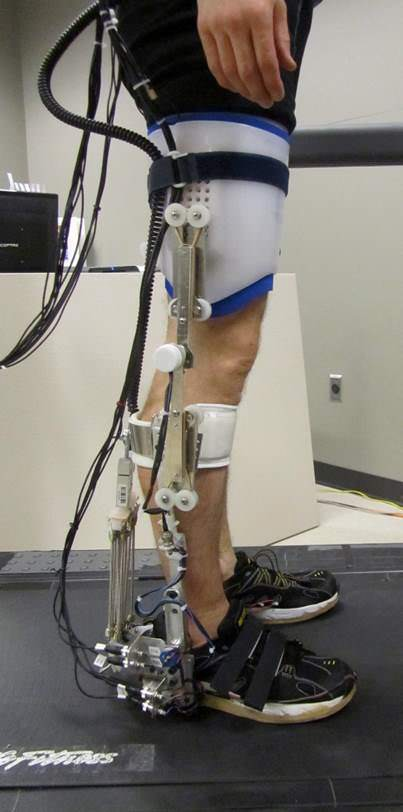My competitive analysis report identified & detailed 33 competitive products along with information on the 21 companies that produced them. Of those products, I identified four as direct competitors and dug deep to provide as much information as possible on each. With each of these four products, care was taken to understand how the system works: mechanically (e.g. hydraulics), electronically (e.g. how long does the battery last?), and software-wise (e.g. what is the likely control architecture?). Equally important was answering: who developed it, what other products have they developed, when was it developed, is it still supported, how is it supported, how much it costs, what national healthcare system was is developed inside, what technology/patents does it leverage, and how it provides specific value to each user. Fully understanding these competitive solutions was essential form a business perspective but also informed our future designs.
Design
Honeybee’s design efforts in the first phase of this SBIR award would focus on the mechanical & electrical development of a proof-of-concept prototype. Although, the bulk of the technological innovation in this project would come from the control software not the hardware or electrical systems, a well-designed prototype would be necessary before we could test that software. I would serve as the lead designer & mechanical engineer of that prototype.
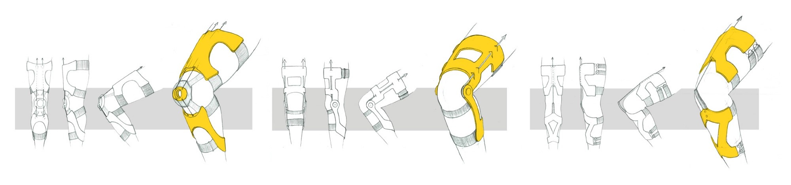Conceptual Design
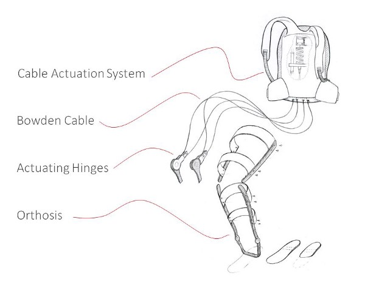Having no prior experience in the design of orthoses, I sought out the advice of Glenn Garrison, an ABC-Certified Prosthetist and Orthotist and Director of Prosthetics and Orthotics at the Hospital for Special Surgery. Glenn was invaluable in introducing me to the field of orthoses and to all of the struggles orthotists face as they help people with their devices. We would work collaboratively over the coming months to create our prototype, Glenn and his department creating the main brace structure and Honeybee creating the actuating hinges. In addition to Glenn’s counsel, I became an expert on the anatomy of the human leg by studying medical textbooks. Understanding the structures, functions, and forces associate with the biological leg is essential for the orthotists augmenting them. Did you know that the kinetic frictional coefficient in the human knee is 0.003?
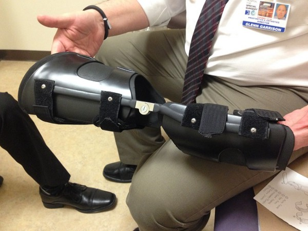Although initially, many different designs were considered to provide torque about the knee, ankle, and hip, to reduce mechanical complexity we quickly narrowed our focus to a Knee-Ankle-Foot Orthosis (KAFO) that would produce torque only about the knee. Such a prototype would be much easier to build and just as effective in testing our control software. Actuation about the hip and ankle would be added in later versions. After several rounds of designs & prototypes, I settled on a cable-driven system that would apply torque from the femoral brace to the tibial brace through a unique dual-pulley-hinge design. The cable actuation system, the battery pack, & system controls would be housed off the orthosis in a backpack worn by the user.
Engineering
As with most ideas, it is one thing to conceive of or draw a robotic orthosis prototype and quite another thing to engineer, analyze and build it. In this instance, I was called on to do both.
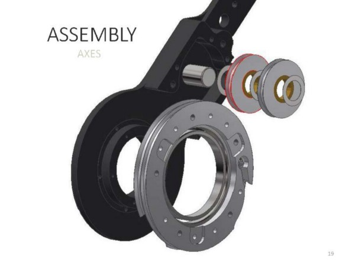 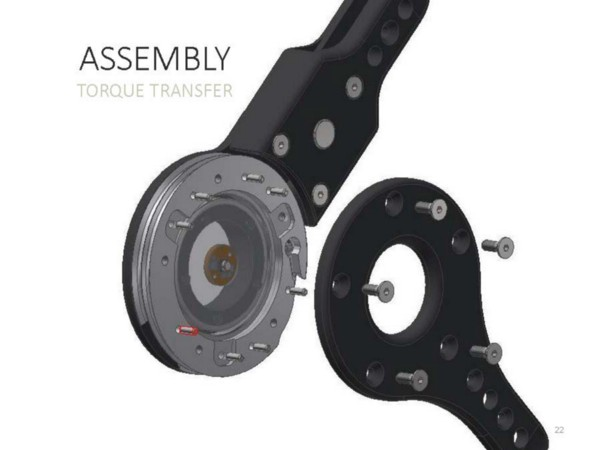I began by deriving the torque requirements for the actuating hinge. Unsure of the exact use case for the prototype we designed to a worst-case scenario, with the intention of dramatically scaling back the force requirements once we had better data on the force necessary for different use-cases. Our initial torque requirement was 877 inch-lbs of extension torque about the knee (enough torque for a 150 lb user to squat effortlessly). This intentional over-design led to a prototype that that was quite bulky but also physically robust.
The center piece of the hinge design (pun intended) is the unique dual-pulley system which can provide both flexion and extension torque by pulling on opposing cables. By pulling both cables simultaneously the system can also lock itself or provide resistance to natural motion. This antagonistic cable system mimics the biological function of the quadriceps and the hamstrings. These four cables (two extension and two flexion on either side of the knee) run from the actuating hinge to the cable actuation system (CAS) through bowden conduit. Inside the CAS, the matching actuating cables connect to stiff compliance springs before joining together and connecting to their actuator via another pulley in a pillow block. The inline compression springs mimic the natural compliance of biological tendons and muscle while providing critical shock absorption. In addition to all the mechanical considerations the design had to also carefully incorporate a specced suite of sensors (imu, position, etc) and all the necessary wiring.
Analysis
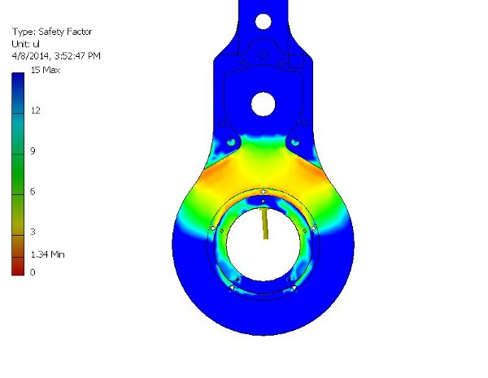Unlike many of the prototyping projects I had worked on in school, this system needed to be mechanically analyzed and carefully vetted before I could begin building it. Any miscalculation could lead to mechanical failure and mechanical failure could lead to sever injury for the user. To ensure that my designs would hold up to the force requirements I conducted some simple finite element analysis (FEA) on each load-bearing component. Such analysis allowed us to feel confident that the prototype was not in danger of breaking under the worst of circumstances. Additionally, each of the purchased components was selected was from a certified vendor on Honeybee’s approved suppliers list.
Prototyping
As with many of my projects at Honeybee, engineering the system proved to be only half of the battle. It was my sole responsibility to select, purchase, receive, modify, assemble, and test the mechanical system I had designed before handing it off to the electrical team for sensor integration. The success of the project as a whole would rest on having a good prototype we could test with and that is what I delivered.
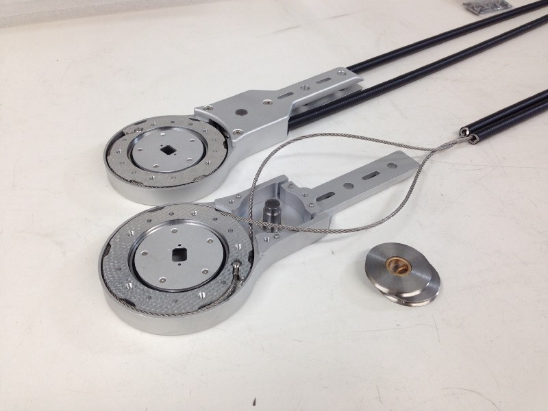Modification & Assembly
After the final design revisions had been made, my senior systems engineer team signed off and I set to work ordering the necessary components. All told, the actuating hinges & cable actuation system would have 212 discrete parts. Among these parts were many custom CNCed components and off-the-shelf parts that would need to be meticulously modified. Since my time in the RISD machine shop I’ve dealt with some difficult & interesting machining challenges but this prototype (owing to the tight tolerances and tight budget) was the most difficult. Following Honeybee’s stringent fabricating process, I began by cataloging each component and creating a technical print for modification in our machine shop. As parts came, they would be tested for compliance, modified according to those technical prints and then later assembled into the final system. After several weeks of modification and construction the actuating hinges, the cable actuation system and the orthosis brace we’re complete and ready for sensor integration.
Testing
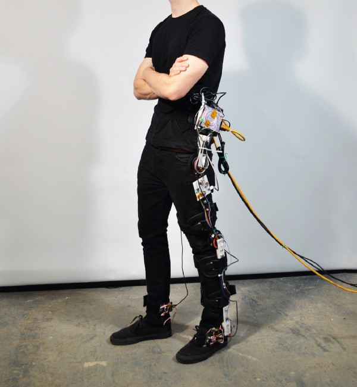With the physical prototype complete, our team turned its attention and resources to the software. As I mentioned, the bulk of technological innovation would come from the software we we’re developing with NYU Poly. Although I am not a software engineer, I worked closely with our software team and tried to understand their challenges and help whenever I could.
Testing of the prototype and the prerequisite gait analysis would require a volunteer. Being intimately involved with the project and the prototypes fabrication I volunteered to be our guinea pig. If by some freak accident, the prototype should hurt someone in testing I figured it should be me.
Gait Analysis
Although I am not able to discuss the specifics of our software development, I can speak about the process generally and my involvement in the testing process. Central to developing and honing our control system software would be understanding the natural, biological forces associated with different activities of daily life (ADL). By understanding the nuances & specifics of healthy, biomechanical motion we could better understand the requirements and role our robotic system would play as we augmented those kinematics.
Understanding the forces associated with natural, biomechanical motion is notoriously difficult. Lucky for our team, the Hospital for Special Surgery is equipped with an industry-leading, Motional Analysis Lab teeming with the most advanced technology in the field. The Motion Analysis Lab would be an indispensable tool for understanding gait and applying that understanding to our control software.
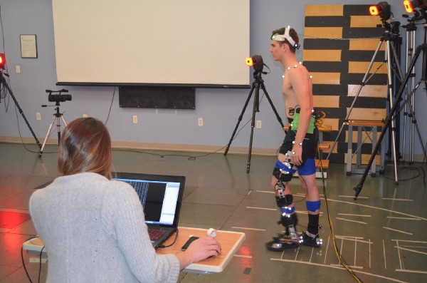We began by examining and understanding the natural gait cycle in a series of tests at the Motion Analysis Lab. Being the prototype user, I was fitted with 62 retroreflective markers at different locations on my body. The relative position & motion of those markers was tracked as I walked by a suite of 17 synchronized, high-speed cameras that surround the lab. The data captured by these cameras allowed the Hospital for Special Surgery to model my entire body in real time. While I walked, force-plates in the floor captured the imparted forces of my gait from heel-strike to toe-off in three dimensions. In addition to the special equipment provided by HSS I wore a specialized sensor brace that capture more data about my leg and the associated biomechanical forces.
Although I cannot divulge particulars, the result of this testing was an ocean of data that could be used by our software team to develop and refine our advanced controls system.
Future Steps
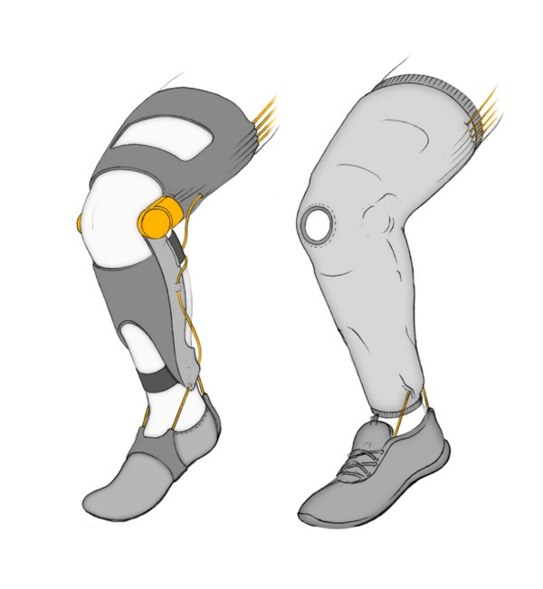In January of 2015, after our prototype and gait analysis were complete, I was transitioned to other projects while our software team continued to work. In 2015 we concluded our Phase 1 SBIR Award, submitted a final report, and applied for a Phase 2 SBIR Award to continue the promising work we had started. Unfortunately, Phase 2 SBIR Awards are notoriously difficult to secure and were were not awarded a second phase. While we do not know exactly why the project was not greenlighted, we know that Phase 2 Awards (being significantly larger than the first) heavily scrutinize project viability from a business & marketplace perspective (The B in SBIR is ‘business’ after all). While we had made significant inroads on the daunting technological challenges we faced, there were still technological hurdles ahead and we could not yet make a compelling business case for our product. Honeybee moved on and so did I.
It is never easy letting go of a project you believe in and have worked hard on. I had spent hours imagining how our project would make a positive, even life-changing impact on those affected by post-stroke or post-polio syndrome. To know that we would not be able to help them was disappointing. That said, I took solace knowing that I did everything I could to make the project a success and had learned an incredible amount in the process. My hope is that someday, I am able to take those lessons learned and make that type of positive impact for another group of users.